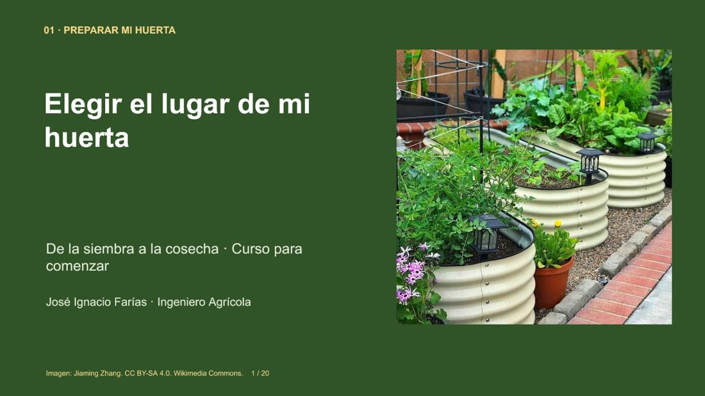
Elegir el lugar de mi huerta
Observa luz, acceso al agua y superficie útil. Puedes practicar con el caso del curso aunque todavía no tengas terreno.
Abrir clase gratuita →PACK HUERTA Y SUELO · DOS CURSOS
Aprende a elegir el lugar, organizar tus siembras y comprender el suelo. Dos cursos en español, con ejercicios resueltos y materiales descargables.
Pago único · 6 meses para ambos cursos desde la activación
Por separado $12.490 CLP. Ahorro del pack: $2.495 CLP.
 José Ignacio FaríasIngeniero Agrícola · Encargado del curso
José Ignacio FaríasIngeniero Agrícola · Encargado del curso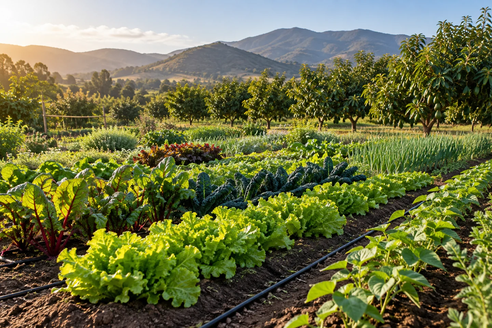
PRUEBA EL MATERIAL ANTES DE COMPRAR
Explora cuatro diapositivas y un extracto del cuaderno, sin registro.

Observa luz, acceso al agua y superficie útil. Puedes practicar con el caso del curso aunque todavía no tengas terreno.
Abrir clase gratuita →EJERCICIO DEL MATERIAL DE MUESTRA
Un patio mide 3 × 2 metros. Reservas 2 m² para circulación y acceso al agua.
Calcula el área propuesta para cultivar antes de abrir la solución.
Es un caso didáctico del curso. El cálculo geométrico no sustituye la revisión del sitio.
Prueba otro caso: un patio de 4 × 2 m reserva 3 m² de paso. ¿Qué superficie queda?
Comparar con la muestra completa →Consulta por el pack de dos cursos a $9.995 CLP.
¿Tu interés está en el agua? También puedes probar la muestra de goteo.
EXPERIENCIAS DE APRENDIZAJE
A tu ritmoClases online en español
Con prácticaEjercicios y ejemplos de campo
Material para conservarPDF y presentaciones descargables
Compra acompañadaCoordinación por WhatsApp
TU PUNTO DE PARTIDA
ELIGE LO QUE NECESITAS APRENDER
Diez cursos con acceso independiente. Encuentra el que se adapta a tu huerta, tu predio o tus estudios.
10 cursos disponibles
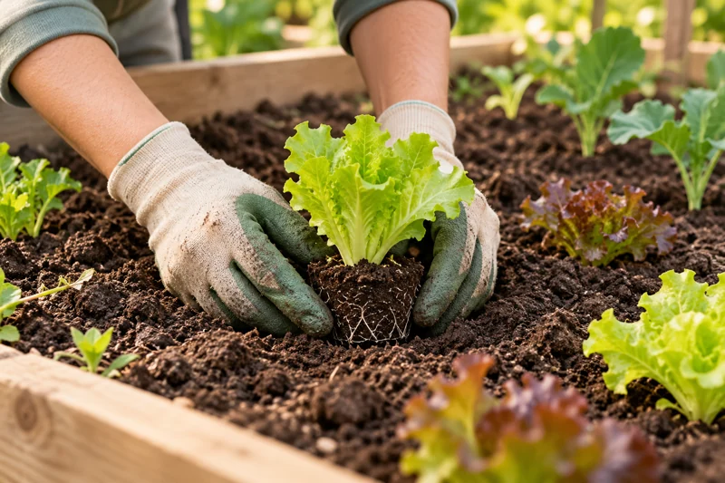
Huerta−50 %Planifica tu espacio y empieza con siembras y cuidados paso a paso.
12 temas PDF y PPT
Precio de lista $9.990 CLP
$4.995 CLP
Pago único · 6 meses de acceso
Comprar por WhatsApp Ver programa completo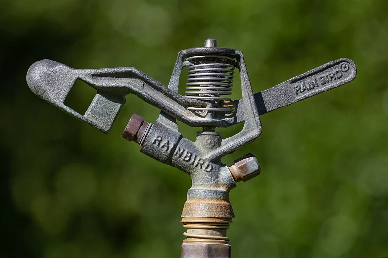
Riego y agua−50 %Comprende cuándo regar y calcula láminas, caudales y tiempos.
12 temas PDF y PPT
Precio de lista $19.990 CLP
$9.995 CLP
Pago único · 6 meses de acceso
Comprar por WhatsApp Ver programa completo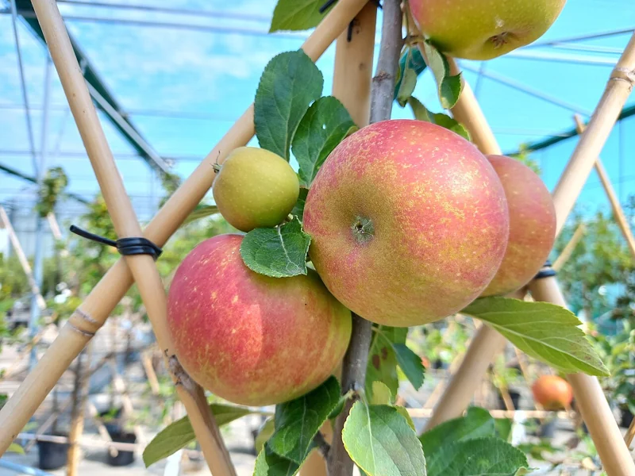
Frutales−50 %Reconoce estructuras y comprende técnicas de poda e injertación.
12 temas PDF y PPT
Precio de lista $19.990 CLP
$9.995 CLP
Pago único · 6 meses de acceso
Comprar por WhatsApp Ver programa completo Frutales−50 %
Frutales−50 %Revisa sitio, raíces, riego y nutrición para organizar el manejo del palto.
12 temas PDF y PPT
Precio de lista $24.990 CLP
$12.495 CLP
Pago único · 6 meses de acceso
Comprar por WhatsApp Ver programa completo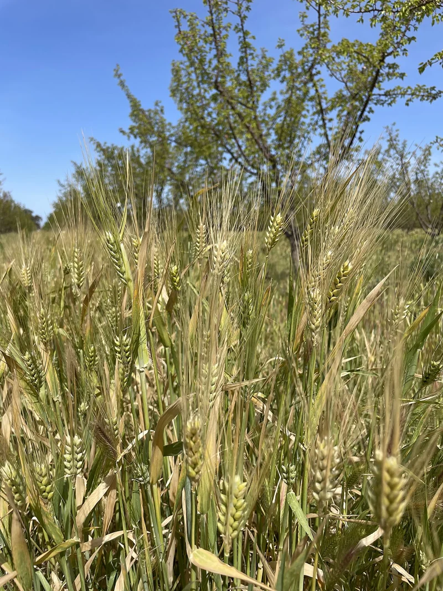
Suelo y manejo−50 %Relaciona suelo, agua y biodiversidad en un plan de manejo.
12 temas PDF y PPT
Precio de lista $14.990 CLP
$7.495 CLP
Pago único · 6 meses de acceso
Comprar por WhatsApp Ver programa completo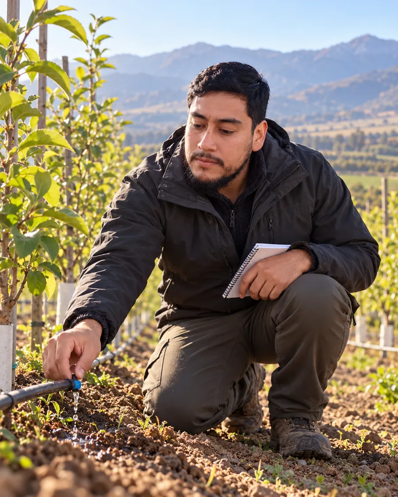
Riego y agua−50 %Organiza componentes, un croquis y la mantención de tu sistema.
12 temas PDF y PPT
Precio de lista $24.990 CLP
$12.495 CLP
Pago único · 6 meses de acceso
Comprar por WhatsApp Ver programa completo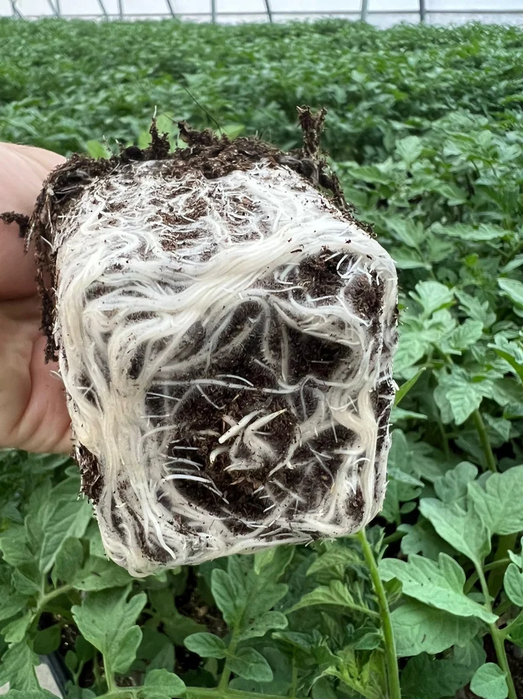
Suelo y manejo−50 %Interpreta análisis y resuelve cálculos de aportes y dosis.
12 temas PDF y PPT
Precio de lista $19.990 CLP
$9.995 CLP
Pago único · 6 meses de acceso
Comprar por WhatsApp Ver programa completo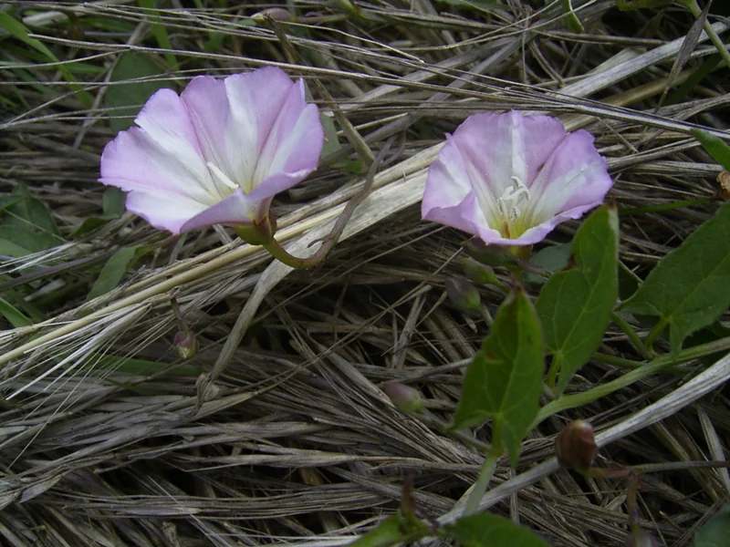
Suelo y manejo−50 %Observa caracteres, documenta la identificación y planifica el manejo.
12 temas PDF y PPT
Precio de lista $14.990 CLP
$7.495 CLP
Pago único · 6 meses de acceso
Comprar por WhatsApp Ver programa completo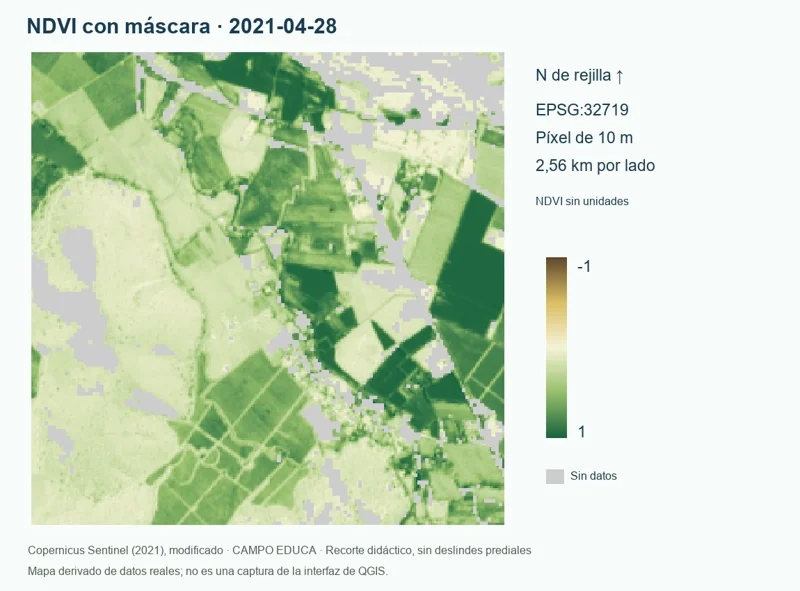
Agricultura digital−50 %Prepara imágenes Sentinel-2 y aprende a calcular e interpretar NDVI.
12 temas PDF y PPT
Precio de lista $29.990 CLP
$14.995 CLP
Pago único · 6 meses de acceso
Comprar por WhatsApp Ver programa completo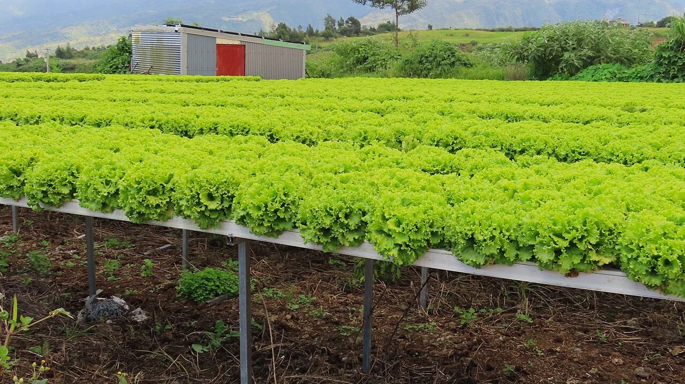
Cultivo sin sueloNuevoCompara raíz flotante y NFT, calcula volúmenes y aprende a medir pH y conductividad.
12 temas · 350 diapositivas · Manual y glosario
Precio de lanzamiento
$9.990 CLP
Pago único · 6 meses desde la activación
Consultar por WhatsApp ↗Ver programa completo →Probar muestra gratuita →Prueba otra palabra o consulta los nueve cursos.
DETRÁS DE CAMPO EDUCA
Ingeniero Agrícola · Encargado de CAMPO EDUCA
Los cursos reúnen explicaciones, ejercicios y registros de campo para comprender las decisiones y sus límites. Puedes estudiar con los casos proporcionados aunque todavía no dispongas de un predio.
José Ignacio coordina las consultas de compra, el registro de alumnos y la habilitación de los cursos.
Conversar con el encargado Ver muestra de certificadoAPRENDE EN LOS CUATRO CURSOS
Agricultura regenerativa, riego agrícola, malezas de Chile y mi primera huerta.
6 meses de acceso a los cuatro cursos indicados desde la activación. Este pack incluye los cuatro cursos indicados.
Antes $49.990 CLP
50 % DE DESCUENTO$24.995 CLP
Pago único. Ahorra $7.485 frente a los cuatro cursos por separado ($32.480).
Comprar el pack por WhatsAppOBSERVAR · REGISTRAR · COMPRENDER
Relaciona los contenidos de los cursos con preguntas concretas de manejo.
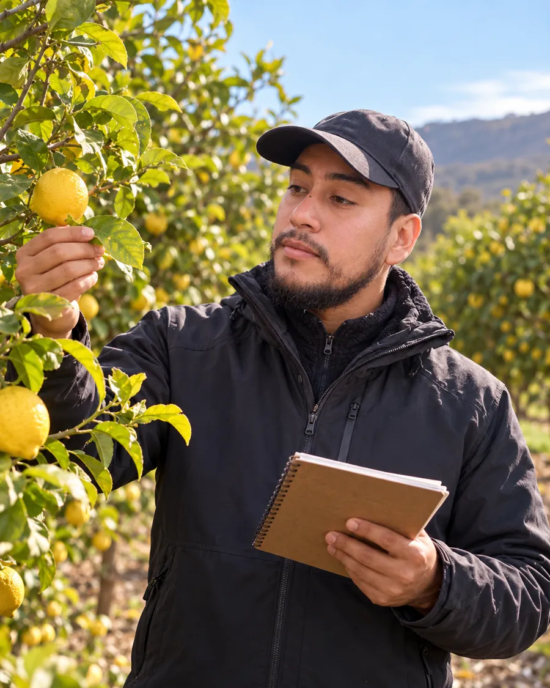
Escenas ilustrativas generadas con IA a partir de imágenes aportadas por el encargado. No documentan predios, visitas técnicas ni actividades reales del curso.
EMPIEZA EN TRES PASOS
El botón abre WhatsApp con el curso y su precio. Tú decides si envías el mensaje.
José Ignacio te informa el medio de pago y confirma contigo el monto, el plazo de activación y las condiciones antes de pagar.
Después de confirmar el pago, el encargado registra tu cuenta y habilita los cursos comprados durante 6 meses.
La compra se coordina personalmente por WhatsApp. Este sitio no recibe pagos ni activa cuentas automáticamente.
12 temas por curso, presentaciones, material de estudio descargable, ejercicios, videos de apoyo, narración sintética y evaluación final. Los certificados de CAMPO EDUCA se emiten al cumplir los requisitos del curso y de aprobación; no representan un título profesional.
El plazo de 6 meses comienza cuando el encargado habilita tu matrícula. Puedes consultar la fecha de vencimiento en tu aula. Si ya eres alumno, tu matrícula actual conserva su plazo; esta oferta se aplica a nuevas compras.
Sí. Escríbenos para confirmar contenidos, requisitos, condiciones de compra y cualquier duda. Abrir WhatsApp no realiza un pago ni crea una cuenta.
Acceso personal a tus cursos habilitados
CONVERSEMOS
Cuéntanos qué quieres aprender. José Ignacio te orienta sobre contenidos, compra y activación de tu cuenta.
Solo aparecen los cursos que el encargado ha habilitado para tu cuenta.
Registra al alumno tras confirmar su compra. Puedes asignarle varios cursos.
Registro manual de cifras agregadas. Se guarda solo en este navegador, sin sincronización con Supabase. No ingreses nombres, correos ni teléfonos. Exporta un respaldo periódicamente.
Usa una fila por fecha, canal y curso. Una consulta calificada es una conversación real sobre compra. Un clic no cuenta como consulta. Registra compradores nuevos atribuidos a esas consultas, evitando duplicarlos entre canales.
Elimina la cuenta, sus matrículas, avance, entregas y certificados. Esta acción es permanente. No se pueden eliminar administradores.
El acceso al material se renueva automáticamente mientras estudias. Tu avance se sincroniza con tu cuenta.